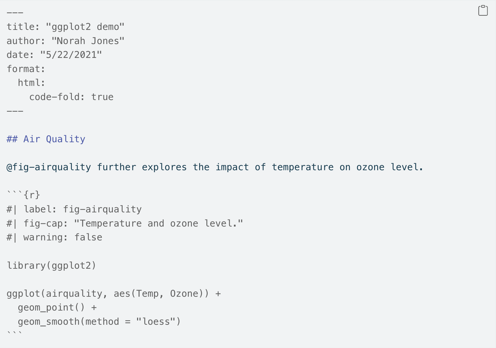

here::here("code", "_common.R") |> source()
# Load packages
if (!requireNamespace("pacman")) install.packages("pacman")
pacman::p_load(tidyr)11 Quarto
Prerequisiti
- Leggere An Introduction to R.
- Leggere R for Data Science (2e).
Concetti e competenze chiave
Preparazione del Notebook
11.1 Introduzione
Quarto si inserisce nella tradizione del literate programming, un approccio introdotto da Donald Knuth negli anni ’80. Il literate programming nasce con l’idea di combinare codice e testo descrittivo in un unico documento, rendendo il programma non solo eseguibile ma anche leggibile e comprensibile agli esseri umani. Questo approccio mira a superare la separazione tra codice e documentazione, permettendo di spiegare non solo come un programma funziona, ma anche perché è stato scritto in un certo modo.
Questa filosofia è particolarmente rilevante nella scienza dei dati e nell’analisi statistica, dove la riproducibilità e la trasparenza sono fondamentali. In questo contesto, strumenti come Quarto giocano un ruolo chiave, permettendo di integrare codice, risultati e narrazione in un unico documento. Con Quarto, è possibile produrre report, articoli, presentazioni e altri output in diversi formati (HTML, PDF, Word, ecc.), combinando testi interpretativi, risultati numerici e grafici.
Quarto si distingue per la sua flessibilità e per il supporto a diversi linguaggi di programmazione, tra cui R, Python e Julia. Questo strumento può essere utilizzato in tre modi principali:
- Presentare conclusioni: condividere i risultati senza esporre il codice sottostante.
- Documentare il processo analitico: includere sia il codice che i risultati per garantire trasparenza e riproducibilità.
- Annotare l’analisi: integrare interpretazioni e decisioni prese durante il lavoro analitico.
Pur non essendo un pacchetto R, Quarto è uno strumento CLI (Command Line Interface). Tuttavia, grazie a RStudio, l’installazione e l’utilizzo di Quarto sono gestiti automaticamente, rendendolo accessibile anche a chi ha meno familiarità con il terminale.
Quarto rappresenta quindi una naturale evoluzione del concetto di literate programming, combinando praticità e rigore scientifico in un unico ambiente di lavoro.
11.1.1 Creare un documento Quarto
Un file Quarto ha estensione .qmd e segue questa struttura:

Questo file include:
- Un’intestazione YAML (metadati del documento).
- Blocchi di codice delimitati da ```.
- Testo scritto in Markdown con formattazioni semplici come titoli (
# Titolo), corsivi (*testo*), ecc.
11.1.2 Editor visivo e sorgente
- Editor visivo: simile a Google Docs, offre un’interfaccia WYSIWYM (What You See Is What You Mean). Consente di inserire facilmente immagini, tabelle, citazioni e altro.
- Editor sorgente: consente un controllo diretto sul Markdown, utile per debug e personalizzazioni avanzate.
11.1.3 Blocchi di codice
I blocchi di codice (chiamati “chunks”) eseguono codice e visualizzano i risultati. Ogni chunk è delimitato da ``` e può includere opzioni specifiche:
#| label: esempio
#| echo: false
1 + 1Le opzioni più comuni includono:
-
echo: false(nasconde il codice nel report), -
eval: false(non esegue il codice), -
message: falseewarning: false(nasconde messaggi o avvisi).
11.1.4 Figure
Le figure possono essere generate tramite codice (es. ggplot()) o inserite come file esterni. Le opzioni più comuni per il controllo delle dimensioni sono:
-
fig-widthefig-height(dimensioni della figura in pollici), -
out-width(percentuale di larghezza del documento), -
fig-asp(rapporto d’aspetto, es. 0.618 per il rapporto aureo).
Esempio:
#| fig-width: 6
ggplot(data, aes(x, y)) + geom_point()11.1.5 Tabelle
Le tabelle possono essere stampate direttamente o personalizzate con funzioni come knitr::kable() o pacchetti come gt:
| mpg | cyl | disp | hp | drat | wt | qsec | vs | am | gear | carb | |
|---|---|---|---|---|---|---|---|---|---|---|---|
| Mazda RX4 | 21.0 | 6 | 160 | 110 | 3.90 | 2.62 | 16.5 | 0 | 1 | 4 | 4 |
| Mazda RX4 Wag | 21.0 | 6 | 160 | 110 | 3.90 | 2.88 | 17.0 | 0 | 1 | 4 | 4 |
| Datsun 710 | 22.8 | 4 | 108 | 93 | 3.85 | 2.32 | 18.6 | 1 | 1 | 4 | 1 |
| Hornet 4 Drive | 21.4 | 6 | 258 | 110 | 3.08 | 3.21 | 19.4 | 1 | 0 | 3 | 1 |
| Hornet Sportabout | 18.7 | 8 | 360 | 175 | 3.15 | 3.44 | 17.0 | 0 | 0 | 3 | 2 |
| Valiant | 18.1 | 6 | 225 | 105 | 2.76 | 3.46 | 20.2 | 1 | 0 | 3 | 1 |
11.1.6 Caching
Per velocizzare i documenti con calcoli complessi, Quarto supporta la memorizzazione dei risultati:
-
cache: truesalva i risultati di un chunk, evitando di ricalcolarli se il codice non cambia. -
dependsonspecifica dipendenze tra chunk.
11.1.7 Citazioni e bibliografie in Quarto
Quarto supporta la generazione automatica di citazioni e bibliografie in formati personalizzati, come lo stile APA. Per includere riferimenti, è necessario creare un file .bib (ad esempio, references.bib) che contenga le citazioni in formato BibTeX. Puoi ottenere queste citazioni direttamente da Google Scholar o altri database accademici. Ecco un esempio:
@article{ceccarini2024age,
title={Age-dependent changes in the anger superiority effect: Evidence from a visual search task},
author={Ceccarini, Francesco and Colpizzi, Ilaria and Caudek, Corrado},
journal={Psychonomic Bulletin \& Review},
pages={1--10},
year={2024},
publisher={Springer}
}11.1.7.1 Configurazione del file YAML
Nel file .qmd, aggiungi le seguenti righe all’intestazione YAML per collegare il file references.bib e configurare lo stile bibliografico:
bibliography: references.bib
biblio-style: apalike
csl: apa.csl-
bibliography: specifica il percorso del file.bib(in questo esempio si assume che si trovi nella stessa cartella del file Quarto). -
biblio-style: imposta lo stile delle citazioni (ad esempio,apalikeper uno stile simile all’APA). -
csl: permette di utilizzare uno stile di citazione personalizzato (es.,apa.csl), che puoi scaricare facilmente da siti come Zotero Style Repository.
11.1.7.2 Citazioni Inline
All’interno di un documento .qmd, le citazioni vengono aggiunte utilizzando il simbolo @ seguito dall’identificativo della citazione specificato nel file .bib. Ad esempio:
... come evidenziato da @ceccarini2024age, si osserva che...Quarto genera automaticamente la bibliografia, includendo solo i riferimenti effettivamente citati nel documento. La bibliografia viene aggiunta alla fine del file renderizzato (ad esempio, in formato HTML o PDF).
Ad esempio, nel caso di un documento .qmd, il testo sopra sarà visualizzato così:
… come evidenziato da Ceccarini et al. (2024), si osserva che…
La citazione completa sarà inclusa automaticamente nella bibliografia, posizionata alla fine della pagina web o del documento finale.1
11.2 Riflessioni Conclusive
Quarto è uno strumento potente per la creazione di documenti riproducibili e ben strutturati, integrando codice, risultati e testo descrittivo in un unico file. Questa introduzione dovrebbe essere sufficiente per iniziare a lavorare con Quarto, ma c’è ancora molto da imparare. Il modo migliore per rimanere aggiornati è consultare il sito ufficiale di Quarto: https://quarto.org.
Un argomento importante che non abbiamo trattato qui riguarda i dettagli di come comunicare in modo accurato le proprie idee agli altri. Per migliorare le proprie capacità di scrittura, Wickham et al. (2023) consigliano due libri: Style: Lessons in Clarity and Grace di Joseph M. Williams & Joseph Bizup, e The Sense of Structure: Writing from the Reader’s Perspective di George Gopen. Una serie di brevi articoli sulla scrittura sono offerti da George Gopen e sono disponibili su https://www.georgegopen.com/litigation-articles.html.
Informazioni sull’Ambiente di Sviluppo
sessionInfo()
#> R version 4.4.2 (2024-10-31)
#> Platform: aarch64-apple-darwin20
#> Running under: macOS Sequoia 15.2
#>
#> Matrix products: default
#> BLAS: /Library/Frameworks/R.framework/Versions/4.4-arm64/Resources/lib/libRblas.0.dylib
#> LAPACK: /Library/Frameworks/R.framework/Versions/4.4-arm64/Resources/lib/libRlapack.dylib; LAPACK version 3.12.0
#>
#> locale:
#> [1] C/UTF-8/C/C/C/C
#>
#> time zone: US/Pacific
#> tzcode source: internal
#>
#> attached base packages:
#> [1] stats graphics grDevices utils datasets methods base
#>
#> other attached packages:
#> [1] ggokabeito_0.1.0 see_0.9.0 gridExtra_2.3 patchwork_1.3.0
#> [5] bayesplot_1.11.1 psych_2.4.12 scales_1.3.0 markdown_1.13
#> [9] knitr_1.49 lubridate_1.9.4 forcats_1.0.0 stringr_1.5.1
#> [13] dplyr_1.1.4 purrr_1.0.2 readr_2.1.5 tidyr_1.3.1
#> [17] tibble_3.2.1 ggplot2_3.5.1 tidyverse_2.0.0 rio_1.2.3
#> [21] here_1.0.1
#>
#> loaded via a namespace (and not attached):
#> [1] generics_0.1.3 stringi_1.8.4 lattice_0.22-6 hms_1.1.3
#> [5] digest_0.6.37 magrittr_2.0.3 evaluate_1.0.1 grid_4.4.2
#> [9] timechange_0.3.0 fastmap_1.2.0 rprojroot_2.0.4 jsonlite_1.8.9
#> [13] mnormt_2.1.1 cli_3.6.3 rlang_1.1.4 munsell_0.5.1
#> [17] withr_3.0.2 yaml_2.3.10 tools_4.4.2 parallel_4.4.2
#> [21] tzdb_0.4.0 colorspace_2.1-1 pacman_0.5.1 vctrs_0.6.5
#> [25] R6_2.5.1 lifecycle_1.0.4 pkgconfig_2.0.3 pillar_1.10.1
#> [29] gtable_0.3.6 glue_1.8.0 xfun_0.50 tidyselect_1.2.1
#> [33] farver_2.1.2 htmltools_0.5.8.1 nlme_3.1-166 rmarkdown_2.29
#> [37] compiler_4.4.2Bibliografia
Ceccarini, F., Colpizzi, I., & Caudek, C. (2024). Age-dependent changes in the anger superiority effect: Evidence from a visual search task. Psychonomic Bulletin & Review, 1–10.
Wickham, H., Çetinkaya-Rundel, M., & Grolemund, G. (2023). R for data science. " O’Reilly Media, Inc.".